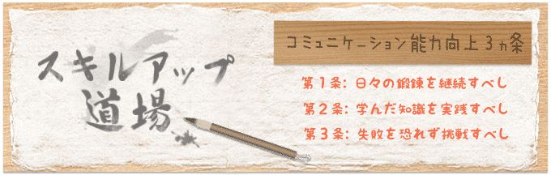
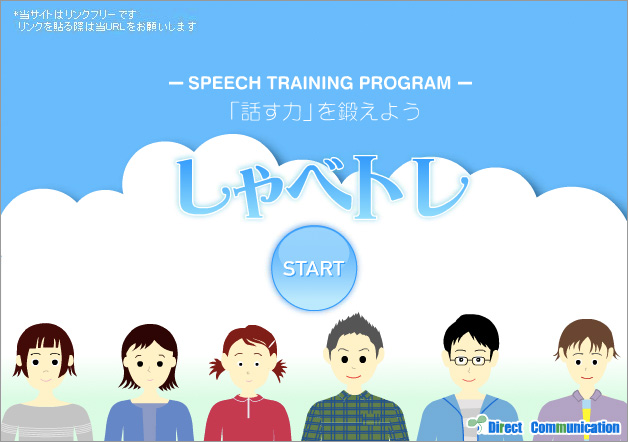

コミュニケーション能力は日々の鍛錬によって向上していきます♪
スキルUP道場ではフラッシュによるトレーニングをご利用頂けます。
また個人で行うトレーニング、会社やサークルで行うトレーニングも集めました。コンテンツは月にひとつ程度追加していきます。
日々のトレーニングに是非ご活用ください！
雑談トレーニング「しゃべトレ」

雑談トレーにニング「しゃべトレ」では人間関係コース前期カリキュラム における目標のひとつ
「自分自身の話を続けることができるようになる」
ための練習を個人で手軽に体験頂けます。飲み会等で自分で話を膨らませるのが苦手な方のためにその練習用として活用することができます。
聴き上手になることは人間関係を築く上で必須の課題だといって断言してよいですが、聴き上手だけではやはり限界があります。
「私に話を振らないで」
「誰かが話しているほうが気が楽だ」
と言う状態だとコミュニケーションに絶えず不安を覚えることになります。また、自分の考えを言葉に起こせないと、自己主張ができず、相手の 理不尽な要求を呑んでしまうことがあります。そういった「自分から話せない」マイナスの経験がさらに対人不安を助長してしまうこともあります。そのため、傾聴力の後に話を膨らませるコツ、楽しい発話の仕方を学ぶ必要があります。
面接トレーニング